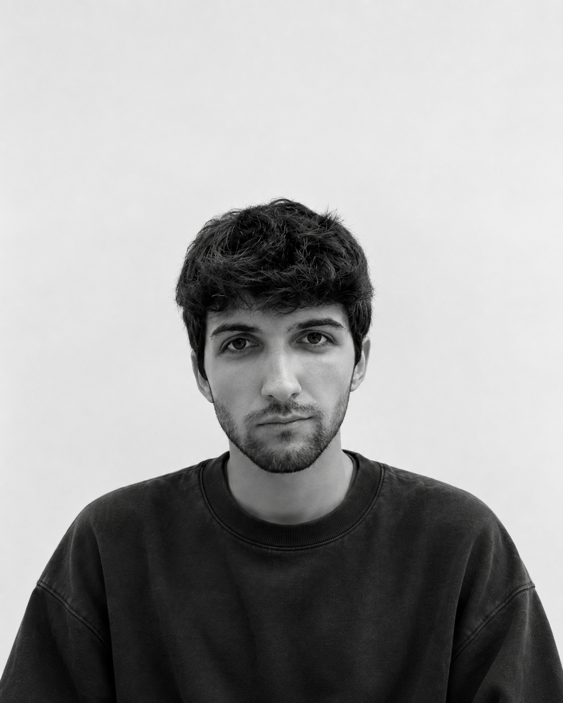

Design is a system of rules and principles that can be applied to create meaningful experiences. I believe that design should be approached with a holistic mindset, considering the entire user journey and the context in which the design will be used.
Unverse is a university project that explores artist Venerus’ emotions through interactive and immersive environments.
2025
Politecnico di Milano
Oltre la Visione is a magazine that traces the life and work of Franco Grignani, one of the most influential Italian designers of the 20th century.
2024
Politecnico di Milano
A book designed for Milan Design Week 2026, exploring how cultural heritage lives not only in historic spaces, but also in the gestures, flavours and traditions that shape a territory.
2026
Politecnico di Milano
I co-designed the bookmark distributed to participants of the NoLBrick workshop at EXPO OSAKA 2025: a small tool created to support the learning of Italian beyond the workshop itself.
2025
EXPO Osaka 2025